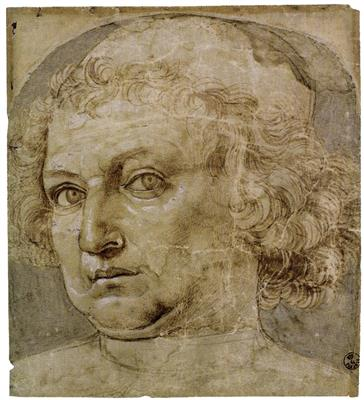
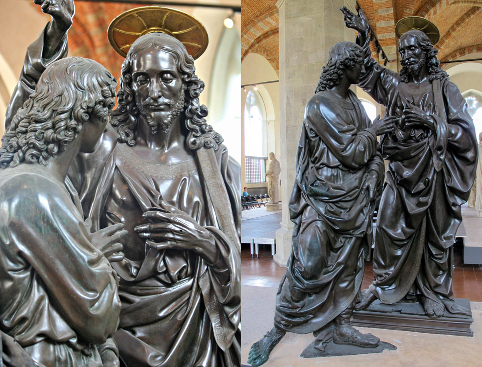

Андреа дель Верроккйо
Андре́а дель Верро́ккйо (італ. Andrea del Verrocchio, справжнє ім'я — Андреа ді Мікеле Чоні; 1435, Флоренція — 1488, Венеція) — італійський скульптор і художник епохи Відродження, один з учителів Леонардо да Вінчі та Джованні Рустічі. Ім'я взяв у свого вчителя, ювеліра Джуліано Верроккйо.
«Христос і святий Тома»
«Христос і святий Тома» або «Невіра святого Томи» — скульптурна група роботи італійського скульптора Андреа дель Верроккіо. Створена у період між 1467 і 1483 роками. Первісно знаходилась у ніші церкви Орсанмікеле у Флоренції (замінена на копію), нині оригінал зберігається у музеї Орсанмікеле.
